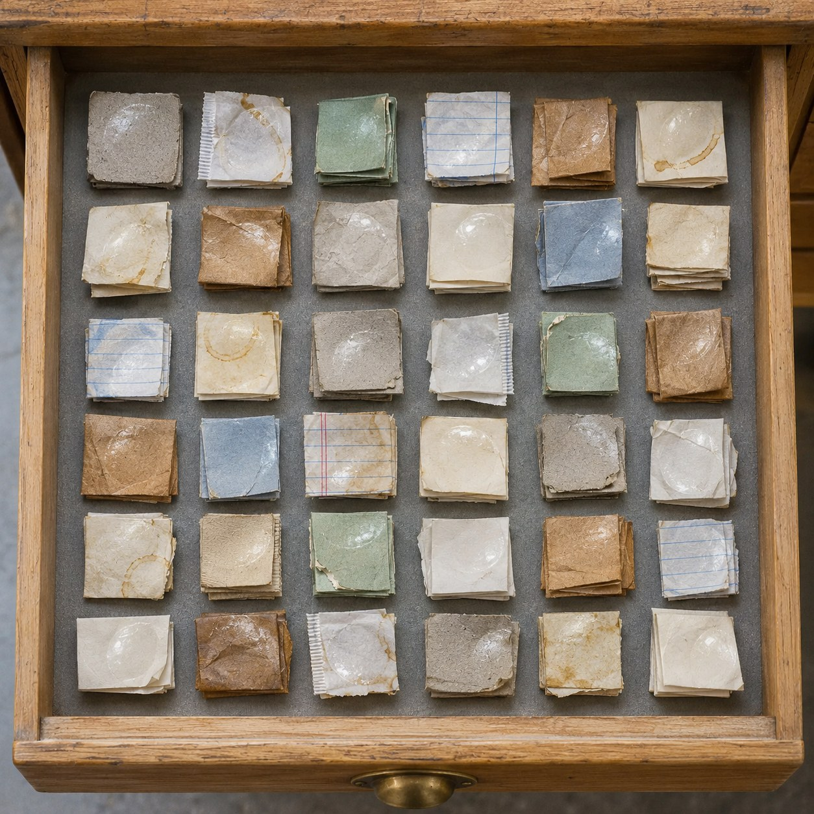
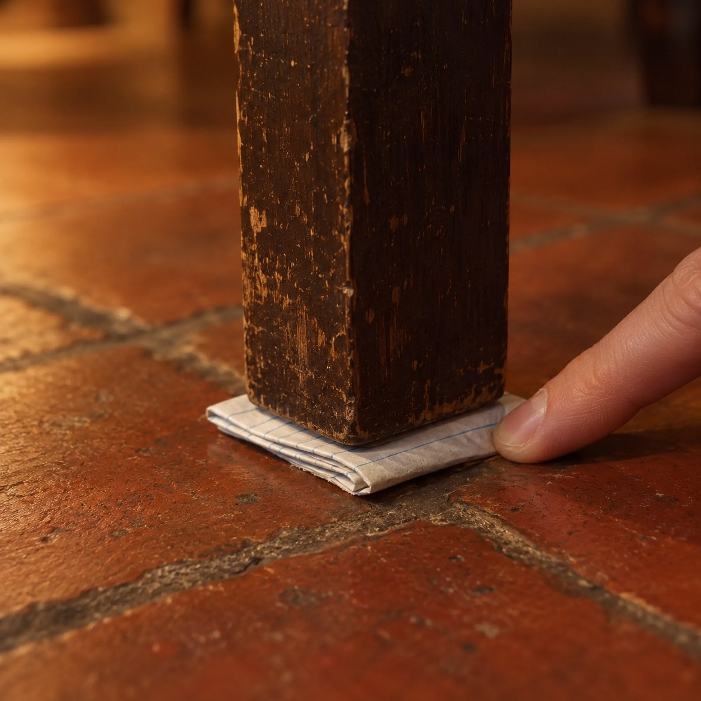

Folded Until Still


Under the short leg of almost every old table there is a small square of folded paper. A torn beer mat, a sugar packet, a bus ticket, a page from a notebook bent over on itself four or five times. Someone sat down, felt the wobble, and fixed it without a word.
For one autumn I collected them. I went from table to table, in cafés and station waiting rooms and the back rooms of pubs, and swapped each wedge for a fresh one folded to the same thickness, so that no table was left to rock. The old ones lie in a shallow drawer now, in rows.
None of them was measured. No one who made them carried a ruler that fine. They folded, pressed, tested, folded once more, and stopped when the table went still. Each wedge is exactly as thick as one floor's mistake, worked out by a hand and a cup of coffee that would not stop trembling.
Plato said that all the tables in the world are poor copies of one true table, the idea of a table, which never wobbles because it stands on nothing. These wedges are what it costs to live among the copies. They are the gap between the idea and the floor, given a body you can hold between two fingers.
Martin Creed once crumpled a sheet of A4 paper into a ball and called it a work. These scraps were folded for a reason, by people who never thought of them again, and that is why I cannot stop looking at them.
I am not sure which half of me loves them more. The machine half admires the precision: every one a perfect answer, found without a single number. The other half keeps thinking of the tables, back in their corners, standing on my copies and not knowing the difference.